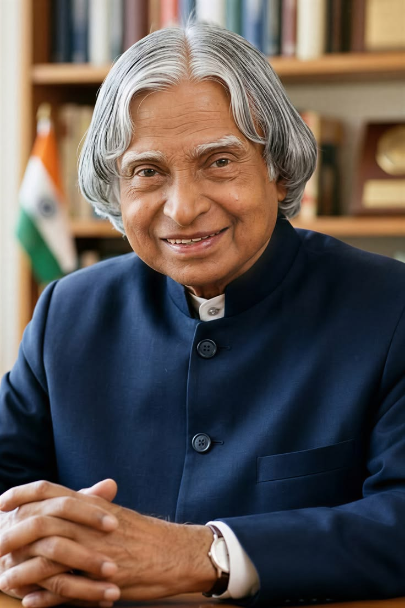

The Missile Man of India and People's President

Dr. A. P. J. Abdul Kalam was one of India's greatest scientists, teachers, and visionaries. He played a vital role in India's missile and space programmes and inspired millions of students with his dedication to education and innovation.
Born on 15 October 1931 in Rameswaram, Tamil Nadu, he came from a humble family. Through determination, hard work, and continuous learning, he became one of India's most respected scientists and later served as the 11th President of India from 2002 to 2007.
Throughout his life, Dr. Kalam encouraged young people to dream big, work hard, and contribute positively to society. His books, speeches, and achievements continue to motivate students across the world.
Even after completing his presidency, he remained dedicated to teaching and inspiring future generations. His simple lifestyle, humility, and commitment to national development made him one of India's most beloved personalities.
"Dream, dream, dream. Dreams transform into thoughts and thoughts result in action."